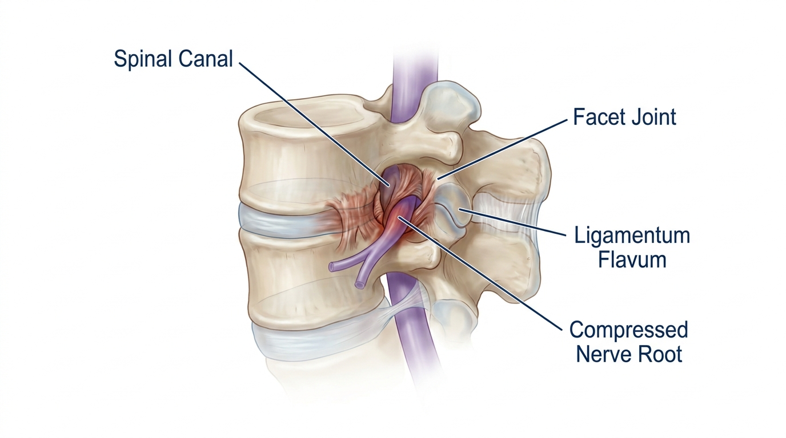

腰椎管狭窄症：针刀疗法与生物力学空间减压推拿的学术关联性
腰椎管狭窄症是一种退行性疾病，其特征是由于小关节肥厚增生及黄韧带增厚，加之周围软组织粘连，导致椎管内神经通道逐渐狭窄。针刀疗法与生物力学空间减压推拿（SART Protocol）通过松解狭窄节段周围的病理性粘连并恢复椎间空间，从而缓解神经根压迫，在学术层面被视为手术干预前可考虑的非手术保守治疗替代方案之一。
腰椎管狭窄症是一种典型的退行性脊椎疾病，随着年龄增长及反复的机械性负荷积累，椎管内的有效空间逐渐减小，从而导致神经根及马尾神经受到压迫。其主要病理机制被解释为小关节（Facet Joint）的退行性增生肥厚及黄韧带（Ligamentum Flavum）的增厚，同时伴有脊柱周围软组织的纤维化与粘连。这种结构性狭窄会引发下肢放射性疼痛及间歇性跛行，其典型的临床特征表现为坐位休息时症状缓解，而在站立、行走或腰椎后伸时症状加重。
椎管内粘连及狭窄的解剖病理机制

椎管是由纵向连接的椎体、后方的小关节及周围黄韧带共同构成的管状结构，内部容纳脊神经与马尾神经。随着退行性变化的进展，小关节周围软组织会积累反复的微小损伤，导致纤维化与粘连，进而降低关节囊的柔韧性。根据最近的一项系统性综述与荟萃分析，针刀疗法作为一种局部松解狭窄节段周围病理性粘连及纤维化软组织的微创方法，其机制被报告与减压导致椎间孔物理性狭窄的韧带肥厚及粘连存在学术层面的关联性[1]。这被解读为与Bodyall韩医院生物力学空间减压推拿（SART Protocol）的原理具有相同的病理生理学基础，该疗法旨在剥离脊柱周围软组织的粘连，恢复椎体的正常排列及空间容积，从而缓解神经根受压。
生物力学空间减压推拿（SART Protocol）的作用机制
生物力学空间减压推拿（SART Protocol）是一种针对狭窄及粘连性病变尝试多方面介入的非手术脊椎矫正方案。在如腰椎管狭窄症这类以粘连及疼痛为主要病理表现的病例中，该方案专注于剥离积累在脊椎小关节及周围关节囊中的微小粘连，逐步恢复关节因狭窄而受限的活动范围。一项相关的实用性、试点性随机对照试验从临床角度验证了针对椎管狭窄主要病理机制（即小关节及黄韧带肥厚，以及周围软组织粘连）进行物理性减压的概念，确认了通过剥离粘连组织以确保椎管内空间的原理[2]。这与本院旨在改善脊椎小关节活动度、缓解脊柱周围软组织张力，以确保神经通道有效空间的生物力学空间减压推拿（SART Protocol）在机制上高度契合。
非手术保守治疗的学术证据与临床方案比较
| 比较项目 | 针刀疗法 | 生物力学空间减压推拿（SART Protocol） |
|---|---|---|
| 主要作用部位 | 狭窄周围的粘连及纤维化软组织 | 脊椎小关节及周围关节囊 |
| 作用机制 | 局部组织松解及粘连剥离 | 恢复脊椎排列并确保有效空间 |
| 侵入性 | 微创性方法 | 非侵入性手法矫正 |
| 学术证据水平 | 荟萃分析及随机对照试验 | 基于生物力学原理的规范方案 |
如上表所确认，尽管两种方法在侵入性上存在差异，但针刀疗法与生物力学空间减压推拿（SART Protocol）均具有共同的病理生理学目标，即通过减压狭窄及粘连组织来恢复神经通道的空间。两项研究均提示，在手术干预之前，非手术保守治疗可被视为支持其对神经压迫病变有效性的学术依据。
众多案例报告显示，通过旨在改善根本结构性原因的保守治疗，腰椎管狭窄症在早中期阶段即可实现症状缓解。Bodyall韩医院的生物力学空间减压推拿（SART Protocol）是手术前可安全考虑的非手术保守治疗替代方案之一，其采用结构性入路，通过剥离粘连脊柱组织及恢复空间来缓解神经根压迫。
结论：综合治疗方法的必要性
腰椎管狭窄症是包括小关节肥厚、黄韧带增厚及软组织粘连等复杂结构性变化的综合产物，而非单一病理因素所致。针对针刀疗法的最新荟萃分析及随机对照试验结果，从学术层面支持了剥离粘连组织有助于症状缓解的观点[1]，该原理与Bodyall韩医院专注于剥离脊柱周围软组织粘连及恢复脊椎空间的生物力学空间减压推拿（SART Protocol）的目标基本一致[2]。因此，在决定进行手术减压之前，腰椎管狭窄症患者可以考虑将基于丰富临床案例、专注于结构机制的非手术保守治疗方案作为一种安全有效的选择之一。